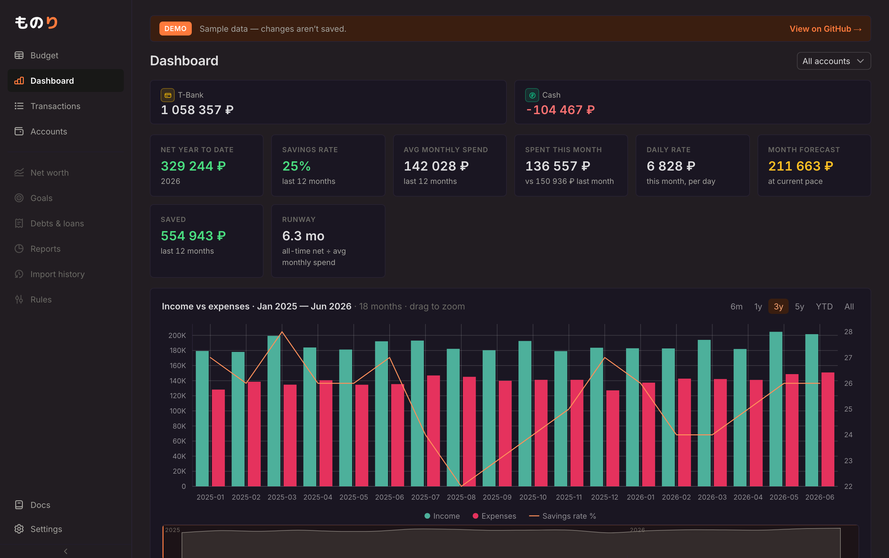
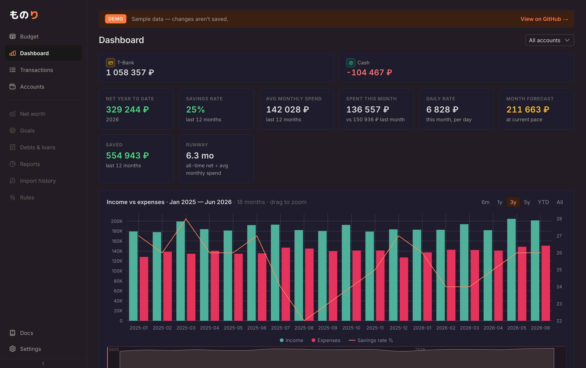
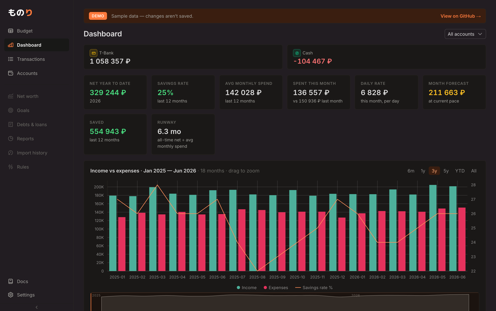

Ты сказала, что нравится бледный фиолетовый фон, а нейтрально-чёрные карточки на нём
читаются как чужеродные «кубики». Здесь весь тёмный палитр (фон, карточки, сайдбар, бордеры)
сведён в одну фиолетовую гамму — карточки становятся мягкой приподнятой поверхностью
той же семьи, а не чёрными блоками. N — контроль без фиолета (тёплый нейтральный),
на случай если фиолет всё-таки был от обоев рабочего стола, а не от приложения.
Выбери вариант — применю в theme.css.


